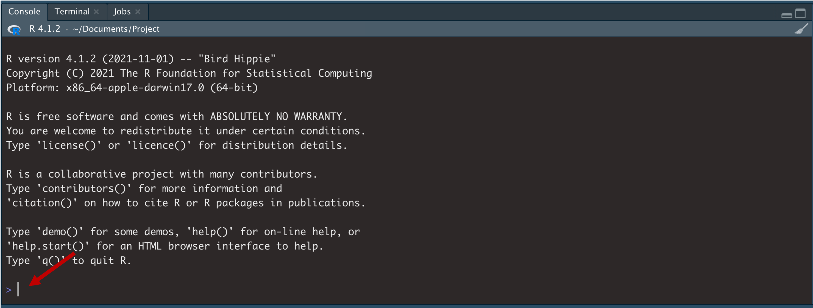

1.3 Paquets
RStudio és semblant al sistema operatiu Windows. Quan acabem de comprar-lo i l’obrim, està pràcticament buit. No té cap programa instal·lat. Si volem que Windows ens serveixi d’alguna cosa, haurem d’instal·lar-hi programes com Word, Excel i algun navegador. Amb R passa el mateix. Quan obrim R per primera vegada, està més aviat buit per dins de sèrie. Té incorporats alguns petits programes (a partir d’ara dels programes d’R en direm paquets o llibreries), però els programes més potents i que els usuaris utilitzen més sovint no venen instal·lats de sèrie. A Windows, el més normal és que haguem d’invertir uns quants diners per comprar i instal·lar programes. A R no cal comprar-los perquè tots són gratis. El que sí que haurem de fer serà instal·lar-los.
1.3.1 Els paquets de sèrie
Hi ha uns paquets d’R que ja ens venen instal·lats de sèrie. Per veure quins són, una opció que tenim és anar a la pestanya Packages, que és a la finestra de Files. Tota la llista que hi apareix són els programes que tenim instal·lats. L’altra opció és fer la consulta a través de la consola. Provem de teclejar installed.packages() a la consola.
Pas 4. Observa quins paquets tens instal·lats. Ara interactuarem per primera vegada amb R a través de la consola. A la fletxa s’indica on podem escriure text.

Provem de teclejar el següent:
installed.packages()Prem Enter al teclat per executar l’acció.
Acabem de donar la nostra primera ordre a R. I ens ha contestat! R sempre utilitzarà la consola per respondre les nostres peticions. És per això que abans hem definit la consola com l’instrument que utilitzem per interactuar amb R. Una forma d’interacció que tenim a l’abast és fer servir R com una calculadora. Si li preguntem pel resultat d’algunes operacions matemàtiques, també ens respondrà a través de la consola.
Pas 5. Calcula: Ara farem servir la consola com a calculadora. Introdueix, una per una, les operacions següents i prem Enter per executar l’acció.
2 + 2 + 2
10 / 5
(10 + 2) / 100La consola ens hauria de retornar el resultat de cada operació.
1.3.2 Instal·lació de nous paquets
Com que ja hem vist que no tenim gaires paquets instal·lats a R, a continuació demanarem a R que n’instal·li alguns de nous. Ho farem amb una funció molt semblant a l’anterior, install.packages(), que serveix per instal·lar paquets.
Pas 6. Instal·la els primers paquets: A continuació instal·larem els paquets següents, que són els més utilitzats pels usuaris d’R: dplyr (Wickham et al. 2022), ggplot2 (Wickham et al. 2021), tidyr (Wickham i Girlich 2022), readxl (Wickham i Bryan 2019) i readr (Wickham, Hester, i Bryan 2022)4. Més endavant coneixerem què fa cadascun. Tecleja o copia i enganxa el codi següent a la consola i prem Enter.
install.packages(c("dplyr", "ggplot2", "tidyr", "readxl", "readr"))Potser us demana si voleu instal·lar els paquets que necessiten compilació. Premeu Y. És possible que el procés tardi uns minuts a completar-se.
Cal seguir dues regles bàsiques a l’hora d’instal·lar els paquets a R:
- Si hi instal·lem només un paquet, per exemple, un paquet que es digui
"paquet1", teclejareminstall.packages("paquet1"). - Si, en canvi, instal·lem dos o més paquets, escriurem una
c()a dins de la primera funció i separarem cada paquet per una coma, per exemple,install.packages(c("paquet1", "paquet2")).
Si ara tornem a teclejar installed.packages() (pas 4), veurem que tenim més paquets instal·lats a R5. Per ara, només hem instal·lat cinc paquets nous, però és possible que més endavant necessitem algun paquet, que també haurem d’instal·lar seguint el mateix procediment.
ERROR! ERROR! ERROR! A vegades poden sorgir errors a l’hora d’instal·lar paquets. Aquestes són algunes de les possibles causes:
- No teniu connexió a internet.
- No heu posat
c()o bé no heu separat cada paquet per una coma (consulta regles bàsiques per instal·lar paquets). - No heu rodejat el nom de cada paquet
"entre cometes". - Si no és cap d’aquestes causes, és possible que hagueu de consultar el Laboratori R (vegeu l’aula).
1.3.3 Càrrega de paquets
Continuant el símil amb Windows, quan instal·lem Microsoft Word no vol dir que el programa ja estigui en funcionament. Si volem que Word funcioni, òbviament haurem d’obrir el programa. Amb R passa el mateix. Tenir un paquet instal·lat no vol dir que estigui funcionant en R. A R, en lloc d’«obrir programes» diem «carregar paquets». Si tornem a la finestra Packages (és una pestanya de la finestra Files), podem veure quins paquets tenim instal·lats i quins tenim instal·lats i carregats.
- Tots els paquets que apareixen a la llista estan instal·lats (1)
- Però només els que tenen un check també estan carregats (2).
Hi ha dues maneres més de mirar els paquets que tenim carregats: introduint la funció search() a la consola o bé clicant el botó Global Environment a la finestra Environment.
Pas 7. Comprova els paquets instal·lats i carregats: Escriu la funció installed.packages() a la consola i prem Enter per veure els paquets que ara tens instal·lats.
installed.packages() I ara escriu la funció search() per veure els paquets que tens carregats.
search() Com veiem, tenim instal·lats els paquets dplyr, ggplot2, tidyr, readxl i readr, però encara no els tenim carregats. I si no els tenim carregats, no els podrem fer servir. Per carregar paquets utilitzarem la funció library().
Pas 8. Carrega els paquets: Carregarem, un per un, els paquets que hem instal·lat prèviament. En primer lloc, carregarem el paquet dplyr. No oblidis de prémer Enter.
library(dplyr)Quan carreguis dplyr t’hauria d’aparèixer un missatge a la consola. A continuació, carrega el paquet ggplot2.
library(ggplot2)Amb ggplot2 la consola normalment no ens dona cap resposta. És normal. Segueix. En tercer lloc, carrega el paquet tidyr.
library(tidyr)I finalment, carrega el paquet readxl.
library(readxl)Pots comprovar que tens els paquets carregats amb search().
Perquè un paquet es pugui utilitzar a R, doncs, haurà d’estar instal·lat i carregat. És molt important saber distingir entre instal·lar un paquet i carregar-lo:
- Els paquets només s’instal·len un cop cada cert temps. Poden passar anys fins que no reinstal·lem un paquet. Normalment necessitarem tornar a instal·lar un paquet en un futur si apareix una nova versió i ens convé actualitzar-lo. Els paquets instal·lats ocupen espai a la memòria del nostre ordinador.
- En canvi, els paquets s’han de carregar cada vegada que entrem a RStudio o obrim un nou projecte. Ho farem, un per un, amb la funció
library()6. Els paquets carregats fan servir memòria RAM. Per això, cada vegada que sortim d’RStudio, els paquets es descarreguen per no alentir el funcionament del nostre ordinador.
1.3.4 Obertura d’un paquet
Obrir paquets sempre fa il·lusió. Per entendre com obrir els paquets que tenim instal·lats i carregats a R, podríem fer un símil amb els arxius comprimits .zip. Quan obrim un .zip, ens podem trobar tot tipus de documents. Els paquets són quelcom semblant i emmagatzemen objectes i funcions que ens seran molt útils per treballar amb R.
Podem veure el contingut d’un paquet de dues maneres:
A la finestra Environment, fem clic a Global Environment i seleccionem el nom del paquet.
A la consola teclegem el nom del paquet seguit de
::. Fixeu-vos que també ens apareix un petit panell d’ajuda per a cada element del paquet
Pas 9. Obra un paquet: Provem d’obrir el paquet base, que és un dels que tenim instal·lats i carregats per defecte a R (R Core Team 2021). En teclegem el nom a la consola seguit de dos :: (COMPTE!: si copies i enganxes el codi, no se t’obrirà el desplegable. Has de teclejar el nom del paquet, que t’apareixerà quan posis els ::).
base::La llista que ens apareix conté tots els objectes i funcions del paquet, ordenats alfabèticament. Podem lliscar amunt i avall de la llista per veure’ls tots. Busca primer l’objecte pi i prem Enter.
base::piVeiem que ens apareix el número pi. Fes el mateix amb letters i LETTERS.
base::letters
base::LETTERSNo cal que posem sempre el nom del paquet davant de l’objecte o funció que volem utilitzar. Sempre que el paquet estigui carregat, també podrem visualitzar qualsevol objecte només introduint-ne el nom.
pi
letters
LETTERSEn aquest darrer cas, ens ha reproduït els objectes pi, letters i LETTERS perquè el paquet base està carregat. Si no tinguéssim el paquet carregat, no ens els reproduiria.
Referències
Una altra opció és instal·lar directament el paquet
tidyverse(Wickham 2021), que conté tots els paquets anteriors i alguns paquets més. No obstant, aquí preferim utilitzar els paquets individuals per dos motius: ens ajudarà a familiaritzar-nos amb cada paquet; no ens ocuparà tant espai ni tanta memòria RAM a l’ordinador.↩︎Per una visualització més directa els paquets instal·lats, premeu
names(installed.packages()[,1]).↩︎Hi ha altres maneres més ràpides d’instal·lar paquets. Si primer instal·lem i carreguem el paquet
pacman, podem carregar tots els paquets amb la funciópload(). Per exemple:p_load(dplyr, tidyr, ggplot2, readr, readxl). Més informació.↩︎